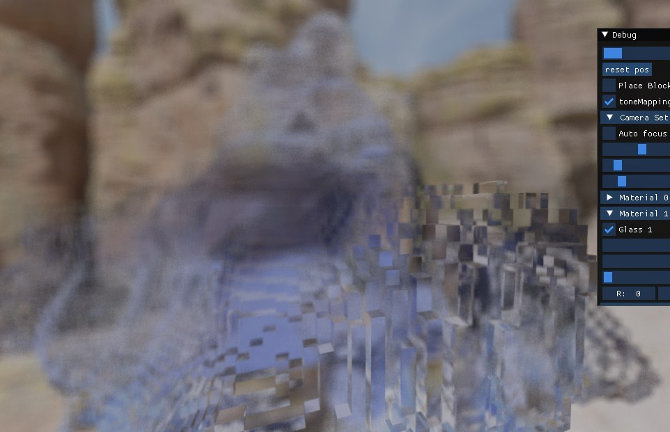
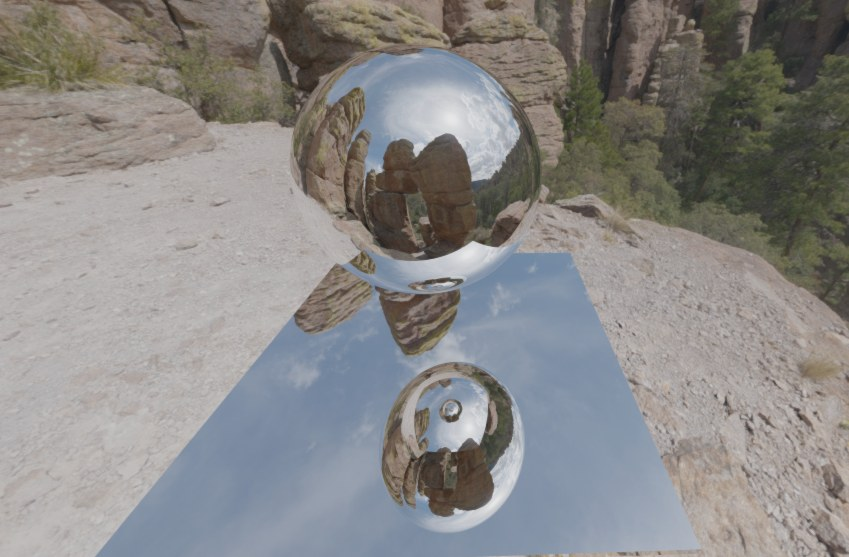
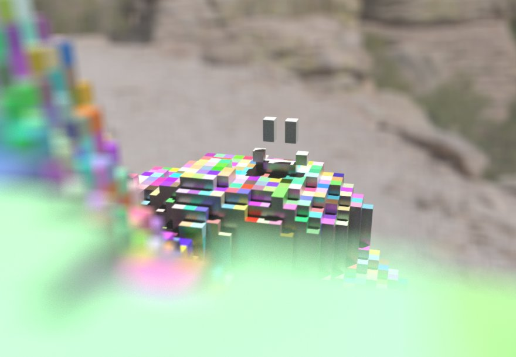
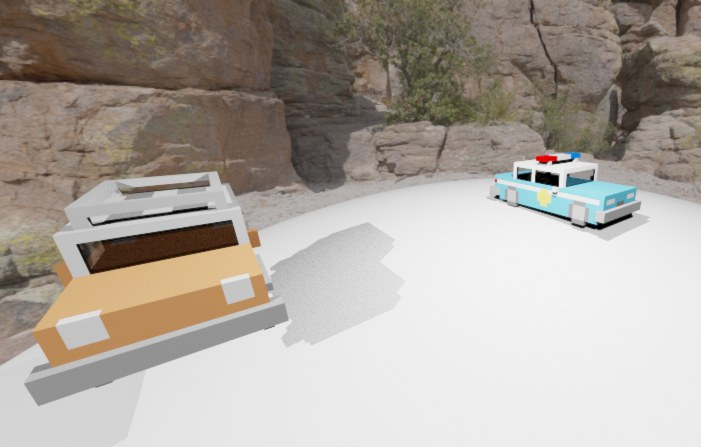
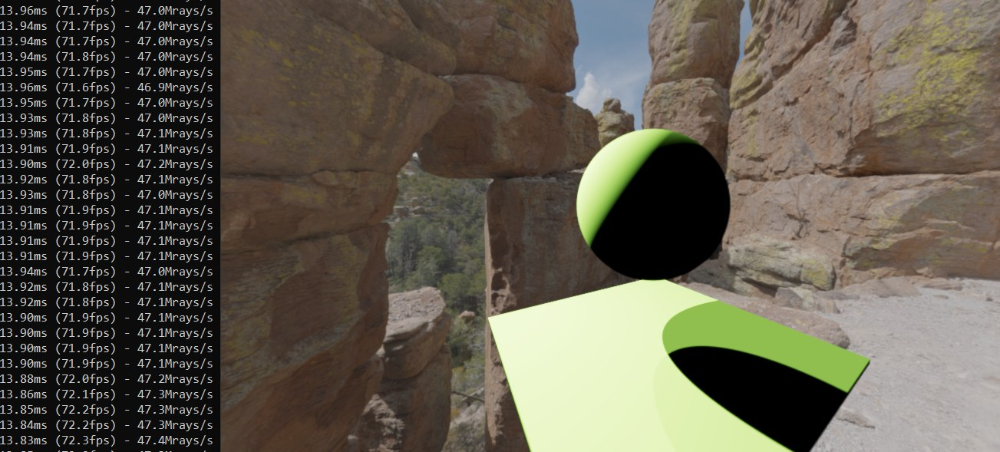
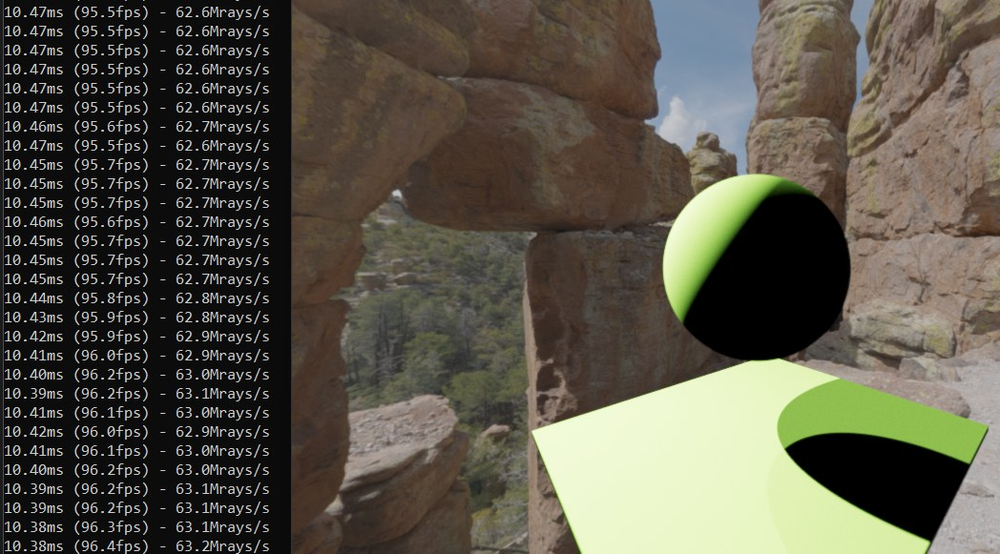
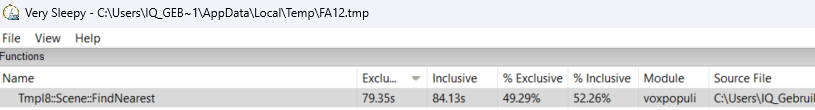
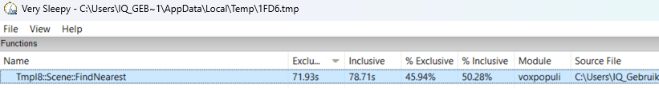

Rendering · Lights
Lights and shadows
The project started from the school's voxel template, which renders a voxel world with plain colours and normals.
Everything on this page I added on top of it in eight weeks.
The first week was all about light. I added point lights, spot lights with an adjustable cone and soft edge, and directional lights,
all with shadow rays and coloured light, and any number of them at once. Every light inherits from one base class
and overrides a single function that returns its contribution, so the renderer can treat all of them the same way.
Every light also draws its own ImGui panel, so I could tweak the whole scene live.
class Light
{
public:
float epsilon = 0.0001f;
int mNumber;
float mIntensity;
float3 mLightColor;
float3 mWorldPos = 0;
virtual float3 CalculateLight(float3 intersectionPoint, float3 Normal) { return float3(); };
virtual bool LightUI() { return false; };
};
Light.h
Rendering · Materials
Mirrors, glass and smoke
Materials
Every voxel stores a material index, and materials hold the colour, reflectiveness, roughness, refractive index and type,
so all voxels that share a material can be changed with one slider.
Mirrors reflect the ray and trace it again, with a recursion cap to stop rays bouncing forever.
Partly reflective materials use Schlick's approximation to randomly decide per ray whether it reflects or scatters,
and roughness blends the perfect reflection with a random direction around it, which gives glossy reflections.
Because every frame is added to an accumulator, these random choices average out into a clean image when the camera stands still.
Glass
Glass was the hardest feature of the project and took me more than a week and a half.
To refract a ray you need to know both the material it is leaving and the one it is entering,
so I changed the voxel traversal to report a hit whenever the material changes, not only when it hits something solid.
From there, Snell's law gives the refracted direction and the Fresnel equations give the chance that the ray reflects instead.
When neither works, the ray is totally internally reflected. Beer's law then tints the light by how far it travelled through the glass,
so thick coloured glass looks darker than thin glass.
Most of my glass bugs weren't in the glass code at all, but in the traversal change I had made for it.
That was a good lesson in checking everything you changed, not only the place you expect the bug to be.
float3 Renderer::Glass(uchar previousVoxelMaterial, uchar mMaterialID, Tmpl8::Ray& ray, Tmpl8::float3& Normal, Tmpl8::float3& intersectionPoint, float epsilon, int rayDepth)
{
float refractionIndex1 = mpScene.mMaterials[previousVoxelMaterial]->refractiveIndex;
float refractionIndex2 = mpScene.mMaterials[mMaterialID]->refractiveIndex;
float cosAI = dot(Normal, -ray.D);
float3 refractDirection = normalize(SnellsLaw(cosAI, refractionIndex1, refractionIndex2, ray.D, Normal));
if (refractDirection != NULL) {
float fresnelProbability = Fresnel(cosAI, dot(-Normal, refractDirection), refractionIndex1, refractionIndex2);
//refract ray
float randomFloat = RandomFloat();
if (randomFloat > fresnelProbability) {
//refract
float3 color = float3(1.0f, 1.0f, 1.0f);
if (mpScene.mMaterials[previousVoxelMaterial]->type == Material::glass) {
ray.tGlass += ray.t;
color = BeersLaw( color - mpScene.mMaterials[previousVoxelMaterial]->albedo, ray.tGlass);
}
else ray.tGlass = 0;
return color * Trace(Ray(intersectionPoint + (refractDirection * epsilon), refractDirection), rayDepth);
}
}
// ... keep track of the distance travelled inside the glass
//TIR or reflection from fresnell
return Trace(Reflect(ray, mMaterialID), rayDepth);
}
Renderer::Glass() — renderer.cpp (shortened)
Smoke
Smoke was my second hard feature. It started as a material that only applies Beer's law, which looked flat.
So I sample a 3D noise texture at points along the ray to get a changing density, scroll that noise over time so the smoke moves,
and step towards the light from each sample point to work out how much light reaches it.
Camera and scene
Around these I added the rest of what makes the images look good: anti-aliasing by jittering every primary ray,
depth of field with an adjustable aperture and focal distance, an HDR sky dome based on Jacco Bikker's tutorial,
approximated ACES tone mapping, and spheres with their own intersection and shadow tests, which work with every material.



Scene · Voxel objects
Voxel objects

The template traces a single voxel grid sitting at the origin. For a game I needed many objects that can move and change size,
so I turned the scene into a list of objects that each implement their own nearest-hit and occlusion tests: voxel objects and spheres.
Voxel objects are loaded from MagicaVoxel scenes using the open-source ogt_vox header library, and all of them share the scene's 255-material palette.
Every object has its own position, scale and grid size, so a flat model gets a flat grid instead of a cube.
To make that work I adapted the setup of the Amanatides and Woo grid traversal, which the template is built on,
to start from the object's own bounds and voxel size, and to clamp to the object's real dimensions.
Getting objects away from the origin to render correctly took a deep dive into the original paper,
after a lot of checkerboard patterns and optical illusions.
Early on I also added editing: clicking placed or removed a sphere of voxels. The game later used a version of that code to carve holes into ghosts while you suck them up.
bool VoxelObject::Setup3DDDA(const Ray& ray, DDAState& state) const
{
// if ray is not inside the world: advance until it is
state.t = 0;
if (!mCube.Contains(ray.O))
{
state.t = mCube.Intersect(ray);
if (state.t > 1e33f) return false; // ray misses voxel data entirely
}
// setup amanatides & woo - DONT assume world is 1x1x1, from (0,0,0) to (1,1,1)
state.step = make_int3(1 - ray.Dsign * 2);
const float3 posInGrid = mInvVoxelSize * ((ray.O + (state.t + 0.00005f) * ray.D) - mWorldPos);
const float3 gridPlanes = (ceilf(posInGrid) - ray.Dsign) * mVoxelSize;
const int3 P = int3(
clamp(make_int3(posInGrid).x, 0, mDimensions.x - 1),
clamp(make_int3(posInGrid).y, 0, mDimensions.y - 1),
clamp(make_int3(posInGrid).z, 0, mDimensions.z - 1)
);
state.X = P.x, state.Y = P.y, state.Z = P.z;
state.tdelta = mVoxelSize * float3(state.step) * ray.rD;
state.tmax = (gridPlanes - ray.O + mCube.b[0]) * ray.rD;
// proceed with traversal
return true;
}
VoxelObject::Setup3DDDA() — scene.cpp
Performance


Everything runs on the CPU, and the game had to hold at least 30 fps, so performance mattered from the first week.
The template already renders the screen in parallel: OpenMP splits the rows over all CPU threads.
My job was to keep the work per ray as small as possible.
One light per ray
Evaluating every light at every hit gets slower with every light you add. Instead, each ray now picks one random light
and multiplies its contribution by the number of lights, which is a Monte Carlo estimate of the total.
Because the accumulator averages frames, the image converges to the same result within about a second.
Above, left evaluates every light and right samples one per ray: the frame time dropped from about 13.9 ms to 10.4 ms,
from 72 to 96 fps, and adding more lights no longer costs extra.
float3 Renderer::DirectIllumination(float3 I, float3 N) {
int size = mLights.size();
return mLights[Rand(size) - 0.5]->CalculateLight(I, N) * (size);
}
Renderer::DirectIllumination() — renderer.cpp
Smaller voxels
Profiling with Very Sleepy showed that finding the nearest hit in the voxel grid took about half of all frame time,
and most of that is reading voxel memory. Each voxel first stored a 32-bit colour plus material,
and I shrank it to a single byte: an index into the material palette. That fits four times as many voxels in every cache line.
Nearest-hit's share of the frame dropped from 49% to 46%.


Tighter grids
Since every object gets a grid that fits its own model, empty space is simply left out.
One model went from a 32×32×32 grid to 32×5×32, which is 84% fewer voxels to store and to step through.
Looking back
I measured, but not carefully enough. My profiling runs had different lengths and camera views,
so the before and after numbers are only an indication. A fixed camera and a fixed number of frames would have given a real comparison.
The light pick is slightly biased. Subtracting 0.5 before rounding down means the first light is picked one and a half times as often
as it should be and the last one only half as often, while every sample is weighted the same.
Picking the index with a plain floor of the random number fixes that.
There was a lot of speed left on the table. I learned about SIMD during this project, but never applied it.
Tracing four or eight rays at once with SSE or AVX, a two-level grid to skip empty space, and a BVH over the objects
were all logical next steps. I started on the BVH, but rightly stopped to finish the game first.
Game
Ghost Hunter: Ray L. Trace
The last two weeks were for a game that uses the ray tracer. My first plan was a top-down shooter like Raiden,
but halfway through modelling the plane I realised it needed things my ray tracer couldn't do yet, like rotating objects.
So I switched to something inspired by Luigi's Mansion: you walk through a dark house with a flashlight, and catch ghosts by sucking them up.
The flashlight is a real spot light, and it is also the core mechanic. Holding space fans a set of rays across the flashlight's cone,
and if one of them hits a ghost before it hits a wall, that ghost gets caught. While it is sucked in, the ghost flies towards you and shrinks,
random holes are carved out of its voxel grid every frame, and the flashlight flickers through random colours.
Player movement uses the same idea, casting rays in the direction you walk to check for walls.
Without reprojection the image gets noisy while things move, so I added a photo mode: press P, the game pauses,
the camera comes free, and the accumulator gets to converge into a clean image.
bool Player::Scan(float deltaTime) {
float maxDegree = acos(mpPlayerFlash->mSoftBandSize);
float incrementDegree = (maxDegree * 2.0f) / mNumberOfScanRays;
float currentDegree = -maxDegree;
for (int i = 0; i < mNumberOfScanRays; i++) {
float3 rotatedVector = normalize(mpPlayerFlash->mDirection.RotateVectorY(currentDegree));
Ray ray = Ray(mpPlayerFlash->mWorldPos + (rotatedVector * 0.05f), rotatedVector);
mpScene->FindNearest(ray);
if (ray.voxel == 234 || ray.voxel == 238) {
//we hit a ghost
mKilledGhost = (VoxelObject*)ray.nearestVoxelObject;
return true;
}
currentDegree += incrementDegree;
}
return false;
}
Player::Scan() — Player.cpp
Reflection
Lessons learned
Look for bugs where you changed things, not where you expect them.
I spent days staring at my glass formulas, while most of the bugs came from the change I had made to the voxel traversal to support glass.
The habit I took from it: when I'm stuck on a bug, first go over everything I changed, instead of fixating on the place I think it must be.
Plan the end of a project from the start.
Planning wasn't required this block, so I followed the weekly topics and kept adding optional features.
That worked until the last two weeks, when I suddenly needed to build a whole game, had to drop my first idea and crunch to finish the second.
A plan with time reserved for the game would have avoided both.
Don't reinvent the wheel.
I wanted to write my own voxel file loader, but a small, well-known library for MagicaVoxel files saved me from writing and debugging a file parser myself.
The same happened with roughness, where a classmate pointed me to a function the template already had.
Knowing what already exists is part of the job.